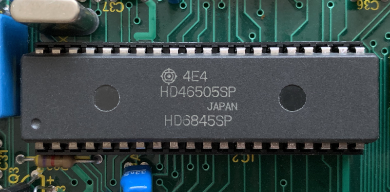
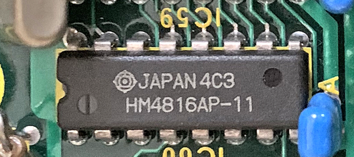
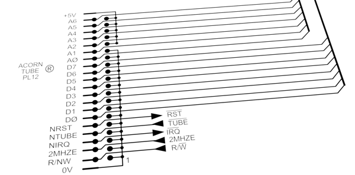

The memory layout and constants
- §1. Constants
- §2. Characters (VDU codes)
- §3. Internal key codes
- §4. Buffer numbers
- §5. Event Types
- §6. CRTC registers
- §7. Paged ROM service calls
- §8. The Tube - Service calls
- §9. Tape / ROM filing system synchronisation bytes
- §10. Memory addresses
- §11. Zero Page Addresses ($00B0-$00FF)
- §12. The 6502 Stack ($0100-$01FF)
- §13. Vectors ($0200-$0235)
- §14. OS Variables ($0236-$02FF)
- §15. VDU Variables ($0300-$37F)
- §16. Cassette Filing System Workspace ($0380-$03DF)
- §17. Keyboard Buffer ($03E0-$03FF)
- §18. Second Processor service points
- §19. Sound Workspace ($0800-$083F)
- §20. Sound, Printer and Envelope Buffers ($0840-$08FF)
- §21. Tape and Speech Buffers ($0900-$0AFF)
- §22. Soft Key Definitions ($0B00-$0BFF)
- §23. Soft Character Definitions ($0C00-$0CFF)
- §24. NMI Routine ($0D00-$0D9E) and Extended Vector Space ($0D9F-$0DFF)
- §25. User Space ($0E00-$7FFF)
- §26. ROM Header Addresses
The following sections list all the constants used. This is followed by the memory addresses used, see .fileWorkspaceA.
.charBELL = 7 (CTRL-G) .charBACKSPACE = 8 .charLINEFEED = 10 .charRETURN = 13 .charDisableVDUOrDeleteLine = 21 (CTRL-U) .charESCAPE = 27 .charSPACE = 32 .charEXCLAMATIONMARK = 33 ! .charDOUBLEQUOTE = 34 " .charSTAR = 42 * .charPLUS = 43 + .charCOMMA = 44 , .charDOT = 46 . .charFORWARDSLASH = 47 / .charZERO = 48 0 .charNINE = 57 9 .charQUESTIONMARK = 63 ? .charAT = 64 @ .charA = 65 A .charF = 70 F .charZ = 90 Z .charUNDERSCORE = 95 _ .charPOUND = 96 £ .charBAR = 124 | .charDELETE = 127 .charCOPY = $87 (character equivalent of the COPY key) .charKEY10 = $CA (character equivalent of code used for *KEY 10)
The internal key code for the space bar is inserted into the first key pressed (.firstKeyPressedInternal) on RESET. Otherwise, for example if SHIFT remained in the 'first key pressed' after a RESET then the next key press might be misinterpreted as a SHIFTed character. In general the internal key codes are converted to ASCII style codes using a table lookup, see .getASCIICode
.internalKeyNumberSPACEBAR = $62
See NAUG Section 9, Page 136 Address Empty Start End Buffer number Range Flag pointer pointer Size -------------------------------------------------------------------------------- 0 = Keyboard $03E0-$03FF $02CF $02D8 $02E1 32 bytes 1 = RS-423 Input $0A00-$0AFF $02D0 $02D9 $02E2 256 bytes 2 = RS-423 Output $0900-$09BF $02D1 $02DA $02E3 192 bytes 3 = Printer $0880-$08BF $02D2 $02DB $02E4 64 bytes 4 = Sound Channel 0 $0840-$084F $02D3 $02DC $02E5 16 bytes 5 = Sound Channel 1 $0850-$085F $02D4 $02DD $02E6 16 bytes 6 = Sound Channel 2 $0860-$086F $02D5 $02DE $02E7 16 bytes 7 = Sound Channel 3 $0870-$087F $02D6 $02DF $02E8 16 bytes 8 = Speech $08C0-$08FF $02D7 $02E0 $02E9 64 bytes
.bufferNumberKeyboard = 0 .bufferNumberRS423Input = 1 .bufferNumberRS423Output = 2 .bufferNumberPrinter = 3 .bufferNumberSound0 = 4 Noise channel .bufferNumberSound1 = 5 .bufferNumberSound2 = 6 .bufferNumberSound3 = 7 .bufferNumberSpeech = 8 .bufferNumberHighest = 8 Buffer offsets. When we add the buffer length it sums to 256. .keyboardInputBufferOffset = 256 - 32 32 bytes .tapeOrRS423InputBufferOffset = 256 - 256 256 bytes .rs423OutputBufferOffset = 256 - 192 192 bytes .printerBufferOffset = 256 - 64 64 bytes .soundChannel0BufferOffset = 256 - 16 16 bytes .soundChannel1BufferOffset = 256 - 16 16 bytes .soundChannel2BufferOffset = 256 - 16 16 bytes .soundChannel3BufferOffset = 256 - 16 16 bytes .speechBufferOffset = 256 - 64 64 bytes
For information on Events see .eventEntryPoint
.eventOutputBufferBecomesEmpty = 0 X = buffer number .eventInputBufferBecomesFull = 1 X = buffer number, Y = character that can't be inserted .eventCharacterEnteringInputBuffer = 2 Y = ASCII value of character .eventADCConversionComplete = 3 Y = ADC channel number .eventStartOfVSync = 4 .eventIntervalTimerCrossingZero = 5 as used by OSWORD 3 / OSWORD 4 .eventESCAPEConditionDetected = 6 .eventRS423ErrorDetected = 7 X = ACIA 6850 status register shifted right once (see .acia6850StatusRegister) Y = character received .eventEconetEvent = 8 Econet event detected .eventUserEvent = 9 For user events

These 18 registers are mostly write only See NAUG Section 13.3.3, Page 190 Register Description Default value for MODE 0 1 2 3 4 5 6 7 ---------------------------------------------------------------------------------------- R0 Horizontal total 127 127 127 127 63 63 63 63 R1 Characters per line 80 80 80 80 40 40 40 40 R2 Horizontal sync position 98 98 98 98 49 49 49 51 R3 Horizontal sync width (bits 0-3) 8 8 8 8 4 4 4 4 + Vertical sync width (bits 4-7) 2 2 2 2 2 2 2 2 R4 Vertical total 38 38 38 30 38 38 30 30 R5 Vertical total adjust 0 0 0 2 0 0 2 2 R6 Vertical displayed characters 32 32 32 25 32 32 25 25 R7 Vertical sync position 34 34 34 27 34 34 27 27 R8 Interlace mode (bits 0,1) 1 1 1 1 1 1 1 3 + Display delay (bits 4,5) 0 0 0 0 0 0 0 1 + Cursor delay (bits 6,7) 0 0 0 0 0 0 0 2 R9 Scan lines per character 7 7 7 9 7 7 9 18 R10 Cursor start (bits 0-4) 7 7 7 7 7 7 7 18 Cursor type (bit 5) 1 1 1 1 1 1 1 1 Cursor blink (bit 6) 1 1 1 1 1 1 1 1 R11 Cursor end 8 8 8 9 8 8 9 19 R12,R13 Screen start address / 8 - - - - - - - - R14,R15 Cursor position - - - - - - - - R16,R17 Light pen position - - - - - - - - R0 = The total number of 'character time units' across the screen - 1 (including non-displayed characters) R1 = Number of displayed characters across the screen R2 = Horizontal sync pulse (changing this moves the screen left/right) R3 = Horz/Vert sync pulse width. Not advisable to change since most TVs/monitors require the standard values. R4/R5 = (Integer) number of character rows (R4) + (fractional) number of scan lines (R5) to make a 50Hz refresh rate. R6 = Number of displayed character rows R7 = Vertical sync position in character rows (moves display up and down by character rows. Used by *TV) R8 = bits 0-1 = interlacing (0 or 2 = non interlaced; 1 = interlaced; 2 = interlace and video for MODE 7 support) bits 2-3 = unused bits 4-5 = display blanking delay (0 = no delay; 1 = one character delay; 2 = two character delay; 3 = disable video output) bits 6-7 = cursor blanking delay (0 = No delay; 1 = one character delay; 2 = two character delay; 3 = disable cursor output) R9 = scan lines per character - 1 R10 = cursor start register bit 7 = unused bit 6 = enable / disable blinking bit 5 = blink rate (fast when set) bits 0-4 = cursor start scan line R11 = bits 0-4 = cursor end scan line R12/R13 = When setting R12/R13 the value to set is related to the screen start address as follows: MODE 0-6: set (screen address / 8) MODE 7: set (screen address - $7400 EOR $2000) The same logic applies to setting R14/R15 (cursor position) R16/R17 = light pen position. See NAUG Section 13.3.9, Page 196. The CRTC registers can be set directly by writing to memory mapped IO. Write the register to change in .crtcAddressRegister ($FE00) then write the new value in .crtcAddressWrite ($FE01). (The OS sets these registers in .setCRTCRegisterDirect and .setTwoCRTCRegisters) A more OS friendly method is to use "VDU 23,0,R,V,0,0,0,0,0,0" to set register R to value V.
.crtcHorizontalTotalRegister = 0 .crtcHorizontalDisplayedRegister = 1 .crtcHorizontalSyncPositionRegister = 2 .crtcSyncWidthRegister = 3 .crtcVerticalTotalRegister = 4 .crtcVerticalTotalAdjustRegister = 5 .crtcVerticalDisplayedCharactersRegister = 6 .crtcVerticalSyncPositionRegister = 7 .crtcInterlaceAndDelayRegister = 8 .crtcScanLinesPerCharacterRegister = 9 .crtcCursorStartRegister = 10 .crtcCursorEndRegister = 11 .crtcStartScreenAddressHighRegister = 12 .crtcStartScreenAddressLowRegister = 13 .crtcCursorPositionHighRegister = 14 .crtcCursorPositionLowRegister = 15 .crtcLightPenPositionHighRegister = 16 .crtcLightPenPositionLowRegister = 17
See NAUG Section 17, Page 295 See .osbyte143EntryPoint
.romServiceCallAbsoluteWorkspaceClaim = $01 memory used only when ROM is paged in .romServiceCallPrivateWorkspaceClaim = $02 memory used even when ROM is not paged in .romServiceCallAutoBoot = $03 .romServiceCallUnrecognisedCommand = $04 star command not recognised .romServiceCallUnrecognisedInterrupt = $05 .romServiceCallBreakInstruction = $06 .romServiceCallUnrecognisedOSBYTE = $07 .romServiceCallUnrecognisedOSWORD = $08 .romServiceCallHelp = $09 .romServiceCallClaimStaticWorkspace = $0A (Issued by paged ROMs, not the OS) .romServiceCallNMIRelease = $0B (Issued by paged ROMs, not the OS) .romServiceCallNMIClaim = $0C (Issued by paged ROMs, not the OS) .romServiceCallROMFilingSystemInitialize = $0D .romServiceCallROMFilingSystemByteGet = $0E .romServiceCallVectorsClaimed = $0F Used when a filing system starts .romServiceCallSpoolExecClosureWarning = $10 .romServiceCallFontImplosionExplosionWarning = $11 .romServiceCallInitialiseFilingSystem = $12 (Issued from paged ROMs, not the OS) .romServiceCallTubeSystemPostInitialisation = $FE .romServiceCallTubeMainInitialisation = $FF
See NAUG Section 18.8, Page 338
.tubeClaimReasonCode = $C0 .tubeCallerIDCassetteFS = $00 .tubeCallerIDDiscFS = $01 .tubeCallerIDEconetLowLevelPrimitives = $02 .tubeCallerIDEconetHighLevelPrimitives = $03
§9. Tape / ROM filing system synchronisation bytes.
See NAUG Section 16.3.1, Page 263 for tape header See NAUG Section 17.5.6, Page 317 for ROM header
.fsSynchronisationByte = $2A Tape or ROM filing system synchronisation byte .romFSMiddleBlockHeaderByte = $23 ROM filing system header byte .romFSFinalBlockHeaderByte = $2B ROM filing system header byte
For the remainder of this chapter all constants refer to addresses in memory.

§11. Zero Page Addresses ($00B0-$00FF).
.fileWorkspaceA = $B0 } .fileWorkspaceB = $B1 } workspace values are used while we .fileWorkspaceC = $B2 } load or save to the tape or ROM .fileWorkspaceD = $B3 } file system. They hold different .fileWorkspaceE = $B4 } values when saving vs. loading. .fileWorkspaceF = $B5 } See uses below. .fileWorkspaceG = $B6 } .fileWorkspaceH = $B7 } when loading from tape or ROM we store the load address, current and next block numbers: .loadAddressLow = .fileWorkspaceA .loadAddressMid1 = .fileWorkspaceB .loadAddressMid2 = .fileWorkspaceC .loadAddressHigh = .fileWorkspaceD .currentBlockNumberLow = .fileWorkspaceE .currentBlockNumberHigh = .fileWorkspaceF .nextBlockNumberLow = .fileWorkspaceG .nextBlockNumberHigh = .fileWorkspaceH when saving to tape we store the current start address and end address: .tapeSaveStartAddressLow = .fileWorkspaceA .tapeSaveStartAddressMid1 = .fileWorkspaceB .tapeSaveStartAddressMid2 = .fileWorkspaceC .tapeSaveStartAddressHigh = .fileWorkspaceD .tapeSaveEndAddressLow = .fileWorkspaceE .tapeSaveEndAddressMid1 = .fileWorkspaceF .tapeSaveEndAddressMid2 = .fileWorkspaceG .tapeSaveEndAddressHigh = .fileWorkspaceH .printMessageAddressLow = $B8 } stores either the address of an .printMessageAddressHigh = $B9 } error routine, or the return } address after printing a message. .currentBlockHasDataErrorFlag = $BA set to $FF if the header of the current block was read OK, but there has been a data checksum error when reading the actual data from the current block. Otherwise $00. Used to know whether to display the 'Rewind tape' message. See .postFileError. .tapeCurrentOptionsByte = $BB current options for the tape filing system. See .tapeOptionsByte below. options are in the top four bits: bit 4 = Abort bit bit 5 = Retry bit bit 6 } bit 7 } Message type: 00 = no messages 10 = short messages 11 = long messages Bits Errors Message Type -------------------------------- 0000 Ignore no messages 0001 Abort no messages 0010 Retry no messages 1000 Ignore short messages 1001 Abort short messages 1010 Retry short messages 1100 Ignore long messages 1101 Abort long messages 1110 Retry long messages .fsTempStorage = $BC temporary storage used by filing system routines .fsCharacterJustReadOrCharToWrite = $BD .tapeChecksumLow = $BE } .tapeChecksumHigh = $BF } CRC checksum .fsGotACharacterToReadOrWriteFlag = $C0 the top bit is set when a byte of data from tape or ROM has (a) been read or (b) is ready to write to tape, and is ready to be processed. The value of the byte is stored in .fsCharacterJustReadOrCharToWrite .checksumIsValidFlag = $C1 non-zero value indicates an error .fsReadProgressState = $C2 current state of reading from tape or ROM filing system (0-5) See .postReadByte .tapeCurrentFileHandle = $C3 handle for currently open file .tapeLastBputValue = $C4 Last byte BPUT, see .osbputEntryPoint .unusedC5 = $C5 [unused] .tapeBaudRate = $C6 current cassette baud rate: 5 for 1200 baud 6 for 300 baud .tapeInterBlockGap = $C7 current duration (in tenths of a second) of the gap between blocks of data when saving to tape. .osfileBlockAddressLow = $C8 } Address of parameter block for .osfileBlockAddressHigh = $C9 } OSFILE .tapeSendingFlag = $CA non-zero = currently sending to tape .tapeCRCBitCounter = $CB loop counter when calculating CRC .tapeFileLengthLow = $CC } temporarily stores the file length .tapeFileLengthHigh = $CD } before writing it into the OSFILE } parameter block .unusedCE = $CE [unused] .unusedCF = $CF [unused] .vduStatusByte = $D0 Each bit holds part the VDU status: bit 0 = printer enable bit 1 = scrolling disabled bit 2 = paged scrolling selected bit 3 = software scrolling (text window) bit 4 = not used bit 5 = graphics cursor enabled (VDU 5) bit 6 = separated cursors bit 7 = VDU disabled .vduCurrentPlotByteMask = $D1 bits to write a pixel within a byte .vduTextColourByteOR = $D2 } bytes to implement current } foreground .vduTextColourByteEOR = $D3 } and background text colours .vduGraphicsColourByteOR = $D4 } bytes to implement current GCOL .vduGraphicsColourByteEOR = $D5 } mode and graphics colours .vduScreenAddressOfGraphicsCursorCellLow = $D6 } address of the top of the cell .vduScreenAddressOfGraphicsCursorCellHigh = $D7 } on screen containing the graphics } cursor position .vduWriteCursorScreenAddressLow = $D8 } address of the top of the cell .vduWriteCursorScreenAddressHigh = $D9 } on screen for the write cursor .vduTempStoreDA = $DA } .vduTempStoreDB = $DB } .vduTempStoreDC = $DC } store for temporary values, .vduTempStoreDD = $DD } used in multiple VDU related .vduTempStoreDE = $DE } functions. .vduTempStoreDF = $DF } .vduMultiplicationTableLow = $E0 stores which multiplication table .vduMultiplicationTableHigh = $E1 to use .fsStatusByte = $E2 bit 0 input file open bit 1 output file open bit 2 not used bit 3 current CATalogue status bit 4 not used bit 5 not used bit 6 EOF reached bit 7 EOF warning given .tapeOptionsByte = $E3 options for the tape filing system we store two sets of options, one for LOAD and SAVE operations on a whole file (top four bits), and the other for 'sequential access' byte by byte (lower four bits). Only one of these two sets of options is active at one time. These are stored in the top four bits of .tapeCurrentOptionsByte. See .tapeCurrentOptionsByte. bit 0/4 = Abort bit bit 1/5 = Retry bit bit 2/6 } bit 3/7 } Message type: 00 = no messages 10 = short messages 11 = long messages Bits Errors Message Type -------------------------------- 0000 Ignore no messages 0001 Abort no messages 0010 Retry no messages 1000 Ignore short messages 1001 Abort short messages 1010 Retry short messages 1100 Ignore long messages 1101 Abort long messages 1110 Retry long messages .stringInputOptions = $E4 When parsing an input string bit 7 = double-quote character found at start bit 6 = space character is not a terminator See .gsinitEntryPoint .starCommandYParameter = $E4 .stringInputPlingFlag = $E5 When parsing an input string $80 if previous character is '!' $00 otherwise .starCommandXParameter = $E5 .readCharacterTimedFlag = $E6 0 means read key instantly 255 means read key timed .tempWorkspaceE6 = $E6 general workspace .currentStringPointer = $E6 offset within command string .autorepeatCountdownTimer = $E7 .osword0BufferAddressLow = $E8 reading line of input by OSWORD 0 .osword0BufferAddressHigh = $E9 .rs423TimeoutCounter = $EA 1: the tape FS has control 0: RS-423 in control, timed out <0: RS-423 in control, not timed out .tapeCritical = $EB bit 7 set while doing a BGET/BPUT (other bits are ignored) .keyPressedInternalTable = $EC start of two byte table of keys .lastKeyPressedInternal = $EC see table below .firstKeyPressedInternal = $ED see table below Situation .lastKeyPressedInternal .firstKeyPressedInternal ------------------------------------------------------------------------- no keys pressed $00 $00 one key pressed first key number $00 two keys pressed second key number first key number second key released $00 first key number .keyToIgnoreWhenScanningWithOSBYTE121or122 = $EE See .scanKeyboard .osbyteA = $EF } .oswordA = $EF } stores register values when .osbyteX = $F0 } calling OSBYTE and OSWORD .oswordX = $F0 } .stackPointerLastBRK = $F0 stores the stack pointer on a BRK instruction .osbyteY = $F1 } stores register values when .oswordY = $F1 } calling OSBYTE and OSWORD .stringInputBufferAddressLow = $F2 } Start address of input string .stringInputBufferAddressHigh = $F3 } .currentlySelectedROM = $F4 current Paged ROM selected .currentSpeechPHROMOrROMNumber = $F5 if bit 7 set: ROM number for Speech PHROM ($F0-$FF) if bit 7 clear: ROM number for current ROMFS ($00-$0F) .romAddressLow = $F6 .romAddressHigh = $F7 .unusedF8 = $F8 [unused] .unusedF9 = $F9 [unused] .tempStoreFA = $FA } .tempStoreFB = $FB } General purpose temporary store .interruptAccumulator = $FC used during IRQ processing to remember the accumulator and also used during a reset (before IRQs are enabled) .languageVersionString = $FD offset to language ROM version string (- multiple uses) .displayStringAddressLow = $FD (- multiple uses) .brkAddressLow = $FD } address after (- multiple uses) .brkAddressHigh = $FE } last BRK (- multiple uses) .displayStringAddressHigh = $FE (- multiple uses) .escapeFlag = $FF the ESCAPE flag this is set when an ESCAPE character (normally .charESCAPE) is entered into an input buffer. It should be acknowledged using OSBYTE 126. This tells the second processor of the event and clears the flag.
§12. The 6502 Stack ($0100-$01FF).
The 6502 stack starts at $01FF and grows downwards.
.stackPage = $0100 6502 stack
Vectors are addresses that can be set to point to a user routine to handle operating system calls, overriding or augmenting the standard behaviour. By default they are set to locations in the MOS ROM. See .defaultVectorTable for the default entry points for each vector See NAUG Section 6, Page 102 Historical note: Acorn began storing vectors at $0200 with the System 2 (1980) and then the Atom (also 1980). Many of the vectors below appear there too, but not .vectorIRQ2V, .vectorBYTEV, .vectorWORDV or anything beyond .vectorNETV.
.page2Start = $0200 .vectorUSERV = $0200 User vector .vectorBRKV = $0202 BRK vector .vectorIRQ1V = $0204 Primary IRQ vector .vectorIRQ2V = $0206 Unrecognised IRQ vector .vectorCLIV = $0208 Command line interpreter .vectorBYTEV = $020A OSBYTE call .vectorWORDV = $020C OSWORD call .vectorWRCHV = $020E OSWRCH call .vectorRDCHV = $0210 OSRDCH call .vectorFILEV = $0212 Load / Save file .vectorARGSV = $0214 Load / Save file parameters .vectorBGETV = $0216 Get byte from file .vectorBPUTV = $0218 Put byte to file .vectorGBPBV = $021A Transfer data to or from a file .vectorFINDV = $021C Open / Close file .vectorFSCV = $021E Filing system control .vectorEVNTV = $0220 Events .vectorUPTV = $0222 User print .vectorNETV = $0224 Econet .vectorVDUV = $0226 Unrecognised PLOT / VDU 23 commands .vectorKEYV = $0228 Keyboard .vectorINSV = $022A Insert character into buffer .vectorREMV = $022C Remove character from buffer .vectorCNPV = $022E Count or purge buffer .vectorIND1V = $0230 Unused vector .vectorIND2V = $0232 Unused vector .vectorIND3V = $0234 Unused vector
§14. OS Variables ($0236-$02FF).
This value is offset when reading / writing OS variables using OSBYTE 166-255
.mosVariablesMinus166 = .mosVariables - 166 value to add the OSBYTE (166-255) number to get the address to read/write .mosVariables = $0236 Constant value .mosVariablesMinus166 (Read using OSBYTE 166/167) .romPointerTable = $0238 Constant value .extendedVectorSpace (Read using OSBYTE 168/169) .romInformationTable = $023A Constant value .romTypeTable (Read using OSBYTE 170/171) .keyTranslationTable = $023C Constant value .keyDataTable1 - 16 (Read using OSBYTE 172/173) .vduVariablesTable = $023E Constant value .vduVariablesStart (Read using OSBYTE 174/175) .verticalSyncCounter = $0240 decremented every vertical sync (Read/Write using OSBYTE 176) .currentInputBuffer = $0241 buffer number for current input (Read/Write using OSBYTE 177) .enableKeyboardInterruptProcessingFlag = $0242 aka 'Keyboard semaphore' $00 = don't update key presses on 100Hz interrupts $FF = key presses are processed as normal (Read/Write using OSBYTE 178) .defaultOSHWM = $0243 default/primary High Water Mark. this is after Paged ROMs have asked for their workspace memory, but before soft character definitions have been 'exploded'. Initialised at RESET time, and otherwise remains constant. (Read/Write using OSBYTE 179) .currentOSHWM = $0244 current OS High Water Mark, which varies due to font explosions. (Read/Write using OSBYTE 180) .rs423Mode = $0245 RS-423 mode (1 is default): 0 = treat RS-423 input the same as the keyboard 1 = ESCAPE is ignored; Soft keys are not expanded; no events are triggered (Read/Write using OSBYTE 181) .softCharacterDefinitionsSwitch = $0246 which ranges of characters are Soft character definitions (i.e. the value X used in *FX 20,X) (Read using OSBYTE 182 but note that this is incompatible with the Master series) .tapeOrROMSwitch = $0247 0 is *TAPE, 2 = *ROM (Read/Write using OSBYTE 183) .videoULAVideoControlRegisterCopy = $0248 OS copy of video control register (Read using OSBYTE 184) .videoULAPaletteValue = $0249 value last written to the palette: bits 0-3: physical colour EOR 7 bits 4-7: logical colour (Read using OSBYTE 185) .romNumberActiveLastBRK = $024A ROM socket number when last BRK occurred (Read using OSBYTE 186) .basicROMNumber = $024B ROM socket number containing BASIC or $FF (Read using OSBYTE 187) .adcCurrentChannel = $024C current ADC channel number (Read using OSBYTE 188) .maximumADCChannelNumber = $024D read maximum ADC channel number (Read using OSBYTE 189) .adcConversionType = $024E ADC conversion type: 0 = default (12 bits) 8 = 8 bits 12 = 12 bits (Read/Write using OSBYTE 190) .rs423ReadyFlag = $024F bit 7 set means RS-423 is ready otherwise RS-423 is busy (Read/Write using OSBYTE 191) .rs423ControlRegisterCopy = $0250 OS copy of the RS-423 control flag (Read/Write using OSBYTE 192) .videoULAFlashingColourIntervalCount = $0251 counts down time before flashing the colours (Read/Write using OSBYTE 193) .videoULAFirstFlashingColourInterval = $0252 number of frames to spend on the first flashing colour (Read/Write using OSBYTE 194, but prefer OSBYTE 9) .videoULASecondFlashingColourInterval = $0253 number of frames to spend on the second flashing colour (Read/Write using OSBYTE 195, but prefer OSBYTE 10) .keyboardAutoRepeatDelay = $0254 delay before a key held down autorepeats in centi-seconds (Read/write using OSBYTE 196, but prefer OSBYTE 11) .keyboardAutoRepeatRate = $0255 keyboard autorepeat rate in centi-seconds (Read/write using OSBYTE 197, but prefer OSBYTE 12) .execFileHandle = $0256 file handle of open EXEC file or zero if none open (Read/Write using OSBYTE 198) .spoolFileHandle = $0257 file handle of open SPOOL file or zero if none open (Read/Write using OSBYTE 199) .escapeAndBreakEffect = $0258 bit 0 set disables ESCAPE bit 1 set clears memory on BREAK (Read/write using OSBYTE 200) .keyboardDisableFlag = $0259 0=Normal otherwise ignore all keys except ESCAPE (Read/Write using OSBYTE 201) .keyboardStatusFlags = $025A bit 3 = 1 means SHIFT pressed bit 4 = 0 means CAPS LOCK engaged bit 5 = 0 means SHIFT LOCK engaged bit 6 = 1 means CTRL pressed bit 7 = 1 means SHIFT enabled (Read/Write using OSBYTE 202) .rs423HandshakeExtent = $025B how many bytes free when dealing with a full buffer (Read/Write using OSBYTE 203) .rs423InputSuppressionFlag = $025C non-zero value inhibits RS-423 input (Read/Write using OSBYTE 204) .tapeRS423SelectionFlag = $025D 0 = RS-423; $40 = TAPE (Comes into effect when using OSBYTE 7/8 to change) (Read/Write using OSBYTE 205) .econetOSCallInterceptionFlag = $025E bit 7 set sends OS calls through the econet vector otherwise should be set to zero (see .osbyteOrOSWORDTableLookup) (Read/Write using OSBYTE 206) .econetReadCharacterInterceptionFlag = $025F read character from ECONET if bit 7 set (Read/Write using OSBYTE 207) .econetWriteCharacterInterceptionFlag = $0260 bit 7 set means direct the character to write to ECONET (Read/Write using OSBYTE 208) .speechSuppressionStatus = $0261 $50 to enable speech; $20 to disable (Read/Write using OSBYTE 209) .soundDisableFlag = $0262 non-zero disables sound (Read/Write using OSBYTE 210) .soundBELLChannel = $0263 sound channel for CTRL-G BELL (Read/Write using OSBYTE 211) .soundBELLAmplitudeEnvelope = $0264 sound amplitude/envelope for CTRL-G BELL (Read/Write using OSBYTE 212) .soundBELLPitch = $0265 sound pitch for CTRL-G BELL (Read/Write using OSBYTE 213) .soundBELLDuration = $0266 sound duration for CTRL-G BELL (Read/Write using OSBYTE 214) .startupMessageSuppressionAndBootOptions = $0267 bit 7 = 0 means ignore OS startup message bit 0 = 1 means if !BOOT errors from DISC because no language found, then lock up machine bit 0 = 0 means if !BOOT errors from *ROM because no language found, then lock up machine (Read/Write using OSBYTE 215) .softKeyStringLength = $0268 length of the current *KEY string being decoded (Read/Write using OSBYTE 216) .pagedModeCounter = $0269 number of lines printed since last paged mode pause (Read/Write using OSBYTE 217) .twosComplimentOfNumberOfBytesInVDUQueue = $026A 255 - bytes in vdu queue (Read/Write using OSBYTE 218) .asciiCodeGeneratedByTABKey = $026B ASCII value to be produced by TAB (Read/Write using OSBYTE 219) .asciiCodeThatGeneratesESCAPEAction = $026C key's ASCII code that will generate an ESCAPE action (Read/Write using OSBYTE 220) .functionAndCursorKeyCodes = $026D 8 bytes that determine how to interpret special keys: byte range of keys 0 $C0-$CF 1 $D0-$DF 2 $E0-$EF 3 $F0-$FF 4 $80-$8F Function keys 5 $90-$9F SHIFT+Function keys 6 $A0-$AF CTRL+Function keys 7 $B0-$BF CTRL+SHIFT+Function keys 0 = ignore key 1 = expand as 'soft' key 2-255 = add this to base for 'ASCII' code note that provision is made for keypad operation as codes $C0-$FF cannot be generated from keyboard but are recognised by OS (Read/Write using OSBYTE 221-228) .escapeAction = $0275 0 = normal ESCAPE action otherwise ASCII (Read/Write using OSBYTE 229) .escapeEffects = $0276 0 = ESCAPE cleared, EXEC file closed, all buffers purged, reset VDU paging counter; otherwise nothing. (Read/Write using OSBYTE 230) .userVIAIRQBitMask = $0277 (Read using OSBYTE 231) .rs423IRQBitMask = $0278 (Read using OSBYTE 232) .systemVIAIRQBitMask = $0279 (Read using OSBYTE 233) .tubePresentFlag = $027A 0 = no Tube 255 = Tube present (Read using OSBYTE 234) .speechSystemPresentFlag = $027B 0 = no speech 255 = SPEECH present (Read using OSBYTE 235) .characterDestinationsAvailableFlags = $027C bit 0 - enable RS-423 driver bit 1 - disable VDU driver bit 2 - disable printer driver bit 3 - enable printer, independent of CTRL-B/C bit 4 - disable SPOOLed output bit 5 - not used bit 6 - disable printer driver (unless preceded by VDU 1) bit 7 - not used (Read using OSBYTE 236) .cursorEditingType = $027D 0 = enable normal cursor editing 1=disable (cursor keys return codes $87-$8B) 2=disable (cursor keys and COPY key are soft keys 11=COPY,12=LEFT, 13=RIGHT,14=DOWN,15=UP) (Read using OSBYTE 237) .unused27E = $027E [initialised to zero, otherwise unused] (Read/Write using OSBYTE 238) .unused27F = $027F [initialised to zero, otherwise unused] (Read/Write using OSBYTE 239) .countryCode = $0280 0 = UK 1 = US (not used by this OS) (Read/Write using OSBYTE 240) .userFlag = $0281 free for use by an application (not used by the OS) (Read/Write with OSBYTE 241 but prefer using OSBYTE 1) .serialULARegisterCopy = $0282 copy of the Serial ULA control register (Read using OSBYTE 242) .timeClockSwitch = $0283 which five byte clock is in currently use (5 or 10) (Read using OSBYTE 243) .softKeyConsistencyFlag = $0284 0 = normal; otherwise inconsistent (Read/Write using OSBYTE 244) .printerDestination = $0285 0 = no printer output 1 = parallel printer 2 = serial printer 3 = user printer routine 4 = net printer 5-255 = user printer routine (Read/Write using OSBYTE 245) .printerIgnoreCharacter = $0286 character that the printer ignores (Read/Write using OSBYTE 246) .breakInterceptJMPInstruction = $0287 } .breakInterceptLowAddress = $0288 } Three bytes form a 'JMP address' } instruction, activated on BREAK .breakInterceptHighAddress = $0289 } (Read/Write using OSBYTE 247-249) .unused28A = $028A [initialised to zero but otherwise unused] (Read/Write using OSBYTE 250) .unused28B = $028B [initialised to zero but otherwise unused] (Read/Write using OSBYTE 251) .languageROMNumber = $028C ROM Number for current language (Read/Write using OSBYTE 252) .lastResetType = $028D what type of reset was last done? 0 Soft reset (BREAK) 1 Power on 2 Hard reset (CTRL-BREAK) only used during the boot sequence itself (Read/Write using OSBYTE 253) .systemAvailableRAM = $028E $40 = 16k (usually Model A) $80 = 32k (usually Model B) (Read using OSBYTE 254) .startUpOptions = $028F bits 0-2 are the initial MODE bit 3 (if clear, reverses the action of SHIFT-BREAK) bits 4-5 are disc drive timings bits 6-7 unused (Read/Write with OSBYTE 255) .hardResetLWM = $0290 low water mark for resetting variables on a hard reset / power on reset (variables are reset from here to end of page) .vduVerticalAdjust = $0290 *TV value .vduInterlaceValue = $0291 *TV interlace value .timeClockA = $0292 } 5 byte clock as read by TIME .timeClockB = $0297 } read and write alternates between these two 5 byte buffers (see .timeClockSwitch) .softResetLWM = $029C low water mark in Page 2 for resetting variables on a soft reset (sets variables from here to end of page) - dual use .countdownIntervalTimer = $029C 5 byte countdown interval timer (causes an EVENT when it reaches zero) .romTypeTable = $02A1 the type of each of the sixteen ROMs $02A1-$2B0 .inkeyTimeoutCounterLow = $02B1 } 16 bit value that is decremented .inkeyTimeoutCounterHigh = $02B2 } at 100Hz while processing a timed } keyboard read .osword0MaxLineLength = $02B3 } .osword0MinASCIICharacter = $02B4 } copies of the values in the OSWORD } 0 parameter block .osword0MaxASCIICharacter = $02B5 } .lowByteLastByteFromADCChannel1 = $02B6 .lowByteLastByteFromADCChannel2 = $02B7 .lowByteLastByteFromADCChannel3 = $02B8 .lowByteLastByteFromADCChannel4 = $02B9 .highByteLastByteFromADCChannel1 = $02BA .highByteLastByteFromADCChannel2 = $02BB .highByteLastByteFromADCChannel3 = $02BC .highByteLastByteFromADCChannel4 = $02BD .adcLastChannelRead = $02BE Stores the last ADC channel read (1-4), or zero if (a) no ADC conversions have taken place yet, or (b) one is pending via OSBYTE 17 or (c) if we have already read this value using OSBYTE 128. .eventEnabledFlags = $02BF } .outputBufferEmptyEventEnabled = $02BF } .inputBufferFullEventEnabled = $02C0 } .characterEnteringBufferEventEnabled = $02C1 } .adcConversionCompleteEventEnabled = $02C2 } .startOfVSyncEventEnabled = $02C3 } 'Event enabled' flags (0 means .intervalTimerCrossingZeroEventEnabled = $02C4 } disabled, non-zero is enabled) .escapeConditionEventEnabled = $02C5 } .rs423ErrorDetectedEventEnabled = $02C6 } .econetGeneratedEventEnabled = $02C7 } .userEventEnabled = $02C8 } .softKeyExpansionPointer = $02C9 next byte to expand is at ($0B09 + .softKeyExpansionPointer) .keyboardFirstAutorepeatCount = $02CA .previousKeyPressedWhenReadingLastKey = $02CB previous key pressed when reading keyboard last key (see .lastKeyPressedInternal) .previousKeyPressedWhenReadingFirstKey = $02CC previous key pressed when reading keyboard first key (see .firstKeyPressedInternal) .previousKeyPressedWhenReadingOSBYTE = $02CD previous key pressed when reading keyboard from OSBYTE 121 / 122 .soundIsUpdatingFlag = $02CE aka 'Sound semaphore' $FF if sound interrupt is updating $00 otherwise .bufferEmptyFlags = $02CF .keyboardBufferEmptyFlag = $02CF } .rs423InputBufferEmptyFlag = $02D0 } .rs423OutputBufferEmptyFlag = $02D1 } .printerBufferEmptyFlag = $02D2 } .soundChannel0BufferEmptyFlag = $02D3 } Bit 7 set if buffer is empty .soundChannel1BufferEmptyFlag = $02D4 } .soundChannel2BufferEmptyFlag = $02D5 } .soundChannel3BufferEmptyFlag = $02D6 } .speechBufferEmptyFlag = $02D7 } .bufferStartIndices = $02D8 .keyboardBufferStartIndex = $02D8 } .rs423InputBufferStartIndex = $02D9 } .rs423OutputBufferStartIndex = $02DA } .printerBufferStartIndex = $02DB } Offset to next byte to be removed .soundChannel0BufferStartIndex = $02DC } Highest location in each .soundChannel1BufferStartIndex = $02DD } buffer has offset $FF .soundChannel2BufferStartIndex = $02DE } .soundChannel3BufferStartIndex = $02DF } .speechBufferEmptyStartIndex = $02E0 } .bufferEndIndices = $02E1 .keyboardBufferEndIndex = $02E1 } .rs423InputBufferEndIndex = $02E2 } .rs423OutputBufferEndIndex = $02E3 } .printerBufferEndIndex = $02E4 } .soundChannel0BufferEndIndex = $02E5 } Offset to last byte entered in .soundChannel1BufferEndIndex = $02E6 } each buffer .soundChannel2BufferEndIndex = $02E7 } .soundChannel3BufferEndIndex = $02E8 } .speechBufferEmptyEndIndex = $02E9 } .tapeInputCurrentBlockSizeLow = $02EA .tapeInputCurrentBlockSizeHigh = $02EB .blockFlagOfCurrentlyResidentBlock = $02EC bit 0 = *RUN only bit 6 = no data bit 7 = last block .lastCharacterOfCurrentlyResidentBlock = $02ED .osfileBlockStart = $02EE .osfileFilenameAddressLow = $02EE .osfileFilenameAddressHigh = $02EF .osfileLoadAddressLow = $02F0 the Load/Exec/Start/End addresses .osfileLoadAddressMid1 = $02F1 are all 32 bit values. The upper .osfileLoadAddressMid2 = $02F2 two bytes are $FF $FF by default, .osfileLoadAddressHigh = $02F3 meaning the code is for the main .osfileExecAddressLow = $02F4 processor. If they have other .osfileExecAddressMid1 = $02F5 values the data is sent via the .osfileExecAddressMid2 = $02F6 Tube to the second processor .osfileExecAddressHigh = $02F7 (if present). .osfileStartAddressLow = $02F8 .osfileStartAddressMid1 = $02F9 .osfileStartAddressMid2 = $02FA .osfileStartAddressHigh = $02FB .osfileEndAddressLow = $02FC .osfileEndAddressMid1 = $02FD .osfileEndAddressMid2 = $02FE .osfileEndAddressHigh = $02FF
§15. VDU Variables ($0300-$37F).
.vduVariablesStart = $0300 .vduGraphicsWindowPixelsLeftLow = $0300 } .vduGraphicsWindowPixelsLeftHigh = $0301 } .vduGraphicsWindowPixelsBottomLow = $0302 } .vduGraphicsWindowPixelsBottomHigh = $0303 } .vduGraphicsWindowPixelsRightLow = $0304 } graphics window in pixels .vduGraphicsWindowPixelsRightHigh = $0305 } .vduGraphicsWindowPixelsTopLow = $0306 } .vduGraphicsWindowPixelsTopHigh = $0307 } .vduTextWindowLeft = $0308 } .vduTextWindowBottom = $0309 } .vduTextWindowRight = $030A } text window .vduTextWindowTop = $030B } .vduGraphicsWindowOriginXLow = $030C } .vduGraphicsWindowOriginXHigh = $030D } graphics origin in external .vduGraphicsWindowOriginYLow = $030E } coordinates .vduGraphicsWindowOriginYHigh = $030F } .vduGraphicsCursorPositionXLow = $0310 } .vduGraphicsCursorPositionXHigh = $0311 } graphics cursor position in .vduGraphicsCursorPositionYLow = $0312 } external coordinates .vduGraphicsCursorPositionYHigh = $0313 } .vduOldGraphicsCursorPixelsXLow = $0314 } .vduOldGraphicsCursorPixelsXHigh = $0315 } old graphics cursor in pixels .vduOldGraphicsCursorPixelsYLow = $0316 } .vduOldGraphicsCursorPixelsYHigh = $0317 } .vduTextCursorXPosition = $0318 } text cursor position .vduTextCursorYPosition = $0319 } .vduGraphicsCursorVerticalOffsetInCell = $031A offset within a character cell of the current graphics cursor Y coordinate .vduQueueStartByte = $031B } nine bytes for vdu queue (start) .vduTriangleFillHeightLow = $031B } .vduTriangleFillHeightHigh = $031C } height used when filling triangles .vduQueueEndByte = $0323 } nine bytes for vdu queue (end) .vduGraphicsCursorPixelsXLow = $0324 current graphics cursor position in .vduGraphicsCursorPixelsXHigh = $0325 pixels .vduGraphicsCursorPixelsYLow = $0326 .vduGraphicsCursorPixelsYHigh = $0327 .vduWorkspaceA = $0328 workspace A-V .vduWorkspaceB = $0329 these have multiple uses. .vduWorkspaceC = $032A Notably these are used when drawing .vduWorkspaceD = $032B lines and triangles. .vduWorkspaceE = $032C .vduWorkspaceF = $032D .vduWorkspaceG = $032E .vduWorkspaceH = $032F .vduWorkspaceI = $0330 .vduWorkspaceJ = $0331 .vduWorkspaceK = $0332 .vduWorkspaceL = $0333 .vduWorkspaceM = $0334 .vduWorkspaceN = $0335 .vduWorkspaceO = $0336 .vduWorkspaceP = $0337 .vduWorkspaceQ = $0338 .vduWorkspaceR = $0339 .vduWorkspaceS = $033A .vduWorkspaceT = $033B .vduWorkspaceU = $033C .vduWorkspaceV = $033D .vduClearGraphicsWindowLineCount = .vduWorkspaceI line counter used in VDU 16 (clear graphics window) .vduMODE7CursorCharacter = .vduWorkspaceQ Plot line variables .vduPlotLineDeltaXLow = .vduWorkspaceA 'plot line' variables .vduPlotLineDeltaXHigh = .vduWorkspaceB .vduPlotLineDeltaYLow = .vduWorkspaceC .vduPlotLineDeltaYHigh = .vduWorkspaceD .vduPlotLineCurrentPointXLow = .vduWorkspaceE .vduPlotLineCurrentPointXHigh = .vduWorkspaceF .vduPlotLineCurrentPointYLow = .vduWorkspaceG .vduPlotLineCurrentPointYHigh = .vduWorkspaceH .vduPlotLineTerminationValueLow = .vduWorkspaceI } final coordinate in the .vduPlotLineTerminationValueHigh = .vduWorkspaceJ } dominant axis. Used to check } when done plotting a line. .vduPlotLineRoutineLow = .vduWorkspaceK } address of routine to use .vduPlotLineRoutineHigh = .vduWorkspaceL } when drawing a line .vduPlotLinePlotDottedPixelFlag = .vduWorkspaceM 127 to draw a dot; 128 to skip .vduPlotLineErrorTermLow = .vduWorkspaceN .vduPlotLineErrorTermHigh = .vduWorkspaceO .vduPlotLineAbsNonDominantAxisDeltaLow = .vduWorkspaceP .vduPlotLineAbsNonDominantAxisDeltaHigh = .vduWorkspaceQ .vduPlotLineAbsDominantAxisDeltaLow = .vduWorkspaceR .vduPlotLineAbsDominantAxisDeltaHigh = .vduWorkspaceS Plot triangle variables .vduPlotTriMainLineErrorTermLow = .vduWorkspaceA 'plot triangle' variables .vduPlotTriMainLineErrorTermHigh = .vduWorkspaceB tracking the 'main line' .vduPlotTriMainLineDeltaXLow = .vduWorkspaceC .vduPlotTriMainLineDeltaXHigh = .vduWorkspaceD .vduPlotTriMainLineDeltaYLow = .vduWorkspaceE .vduPlotTriMainLineDeltaYHigh = .vduWorkspaceF .vduPlotTriMainLineCurrentPointXLow = .vduWorkspaceG .vduPlotTriMainLineCurrentPointXHigh = .vduWorkspaceH .vduPlotTriMainLineCurrentPointYLow = .vduWorkspaceI .vduPlotTriMainLineCurrentPointYHigh = .vduWorkspaceJ .vduPlotTriMainLineXDirectionFlag = .vduWorkspaceK .vduPlotTriMinorLineErrorTermLow = .vduWorkspaceL 'plot triangle' variables .vduPlotTriMinorLineErrorTermHigh = .vduWorkspaceM tracking the 'minor line' .vduPlotTriMinorLineDeltaXLow = .vduWorkspaceN .vduPlotTriMinorLineDeltaXHigh = .vduWorkspaceO .vduPlotTriMinorLineDeltaYLow = .vduWorkspaceP .vduPlotTriMinorLineDeltaYHigh = .vduWorkspaceQ .vduPlotTriMinorLineCurrentPointXLow = .vduWorkspaceR .vduPlotTriMinorLineCurrentPointXHigh = .vduWorkspaceS .vduPlotTriMinorLineCurrentPointYLow = .vduWorkspaceT .vduPlotTriMinorLineCurrentPointYHigh = .vduWorkspaceU .vduPlotTriMinorLineXDirectionFlag = .vduWorkspaceV .vduPlotTriStorageForCoordinates = $033E eight bytes used when drawing a triangle to remember the original XY coordinates (four bytes) and graphics cursor (four bytes) ($033E to $0345) .unused346 = $0346 [unused] .unused347 = $0347 [unused] .unused348 = $0348 [unused] .unused349 = $0349 [unused] .vduTextCursorCRTCAddressLow = $034A CRTC address of the cursor .vduTextCursorCRTCAddressHigh = $034B .vduTextWindowWidthInBytesLow = $034C .vduTextWindowWidthInBytesHigh = $034D .vduStartScreenAddressHighByte = $034E .vduBytesPerCharacter = $034F .vduScreenTopLeftAddressLow = $0350 .vduScreenTopLeftAddressHigh = $0351 .vduBytesPerCharacterRowLow = $0352 .vduBytesPerCharacterRowHigh = $0353 .vduScreenSizeHighByte = $0354 .vduCurrentScreenMODE = $0355 .vduCurrentScreenMODEGroup = $0356 MODE group = screen memory size: 0 = 20k (MODE 0,1,2) 1 = 16k (MODE 3) 2 = 10k (MODE 4,5) 3 = 8k (MODE 6) 4 = 1k (MODE 7) .vduForegroundTextColour = $0357 } Current colours. Stored as the .vduBackgroundTextColour = $0358 } byte value to colour the whole .vduForegroundGraphicsColour = $0359 } byte the given colour .vduBackgroundGraphicsColour = $035A } .vduForegroundGCOLMode = $035B GCOL foreground mode (0=Normal, 1=OR, 2=AND, 3=EOR, 4=Invert) .vduBackgroundGCOLMode = $035C GCOL background mode (0=Normal, 1=OR, 2=AND, 3=EOR, 4=Invert) .vduJumpVectorLow = $035D .vduJumpVectorHigh = $035E .vduLastCursorStartRegisterValue = $035F .vduNumberOfLogicalColoursMinusOne = $0360 .vduPixelsPerByteMinusOne = $0361 .vduColourMaskLeft = $0362 colour mask left. Bits for the setting the leftmost pixel of a byte to white: MODE 0,3,4,6,7 = $80 MODE 1,5 = $88 MODE 2 = $AA .vduColourMaskRight = $0363 colour mask right. Bits for the setting the rightmost pixel of a byte to white: MODE 0,3,4,6,7 = $01 MODE 1,5 = $11 MODE 2 = $55 .vduTextInputCursorXCoordinate = $0364 .vduTextInputCursorYCoordinate = $0365 .vduTeletextCharacterForCursor = $0366 .vduFontFlags = $0367 ranges of characters that have SOFT character definitions: bit 7 = characters 32-63 bit 6 = characters 64-95 bit 5 = characters 96-127 bit 4 = characters 128-159 bit 3 = characters 160-191 bit 2 = characters 192-223 bit 1 = characters 224-255 bit 0 = unused See .osbyte20EntryPoint .vduFontZoneAddressesHigh1 = $0368 high byte of the address (=page number) for storing character definitions 32-63 (in ROM or RAM) .vduFontZoneAddressesHigh2 = $0369 high byte of the address (=page number) for storing character definitions 64-95 (in ROM or RAM) .vduFontZoneAddressesHigh3 = $036A high byte of the address (=page number) for storing character definitions 96-127 (in ROM or RAM) .vduFontZoneAddressesHigh4 = $036B high byte of the address (=page number) for storing character definitions 128-159 (in ROM or RAM) .vduFontZoneAddressesHigh5 = $036C high byte of the address (=page number) for storing character definitions 160-191 (in ROM or RAM) .vduFontZoneAddressesHigh6 = $036D high byte of the address (=page number) for storing character definitions 192-223 (in ROM or RAM) .vduFontZoneAddressesHigh7 = $036E high byte of the address (=page number) for storing character definitions 224-255 (in ROM or RAM) .vduColourPaletteStart = $036F } 16 bytes of palette information .vduColourPaletteEnd = $037E } .unused37F = $037F [unused] .vduVariablesEnd = $037F
§16. Cassette Filing System Workspace ($0380-$03DF).
.tapeBlockHeaderStart = $0380 .tapeBlockFilename = $0380 filename (11 bytes) .unused38B = $038B [unused] .tapeBlockLoadAddressLow = $038C } .tapeBlockLoadAddressMid1 = $038D } .tapeBlockLoadAddressMid2 = $038E } load address .tapeBlockLoadAddressHigh = $038F } .tapeBlockExecutableAddressLow = $0390 } .tapeBlockExecutableAddressMid1 = $0391 } .tapeBlockExecutableAddressMid2 = $0392 } executable address .tapeBlockExecutableAddressHigh = $0393 } .tapeBlockNumberLow = $0394 block number (low byte) .tapeBlockNumberHigh = $0395 block number (high byte) .tapeBlockLengthLow = $0396 .tapeBlockLengthHigh = $0397 .tapeBlockFlagByte = $0398 bit 7=last block, written when closing a file for output .tapeBlockSpareByteA = $0399 .tapeBlockSpareByteB = $039A .tapeBlockSpareByteC = $039B .tapeBlockSpareByteD = $039C .bputBufferOffset = $039D offset in buffer for next BPUT .bgetBufferOffset = $039E offset in buffer for next BGET .unused39F = $039F [unused] .unused3A0 = $03A0 [unused] .unused3A1 = $03A1 [unused] .unused3A2 = $03A2 [unused] .unused3A3 = $03A3 [unused] .unused3A4 = $03A4 [unused] .unused3A5 = $03A5 [unused] .unused3A6 = $03A6 [unused] .bgetFilename = $03A7 zero terminated filename (11 bytes) .fsFilename = $03B2 zero terminated filename (11 bytes) .unused3BD = $03BD [unused] .fsLoadAddressLow = $03BE .fsLoadAddressMid1 = $03BF .fsLoadAddressMid2 = $03C0 .fsLoadAddressHigh = $03C1 .fsExecutionAddressLow = $03C2 .fsExecutionAddressMid1 = $03C3 .fsExecutionAddressMid2 = $03C4 .fsExecutionAddressHigh = $03C5 .fsBlockNumberLow = $03C6 .fsBlockNumberHigh = $03C7 .fsBlockLengthLow = $03C8 .fsBlockLengthHigh = $03C9 .fsBlockFlagByte = $03CA block flag byte: bit 0 set = *RUN only bit 7 set = last block .fsSpareByteA = $03CB .fsSpareByteB = $03CC .fsSpareByteC = $03CD .fsSpareByteD = $03CE .fsChecksumLow = $03CF } .fsChecksumHigh = $03D0 } checksum .tapeSequentialAccessInterBlockGap = $03D1 time between writing blocks (for sequential access, BGET and BPUT) to cassette (> 0) in tenths of a second. .filenameToSearchFor = $03D2 zero terminated filename (11 bytes) .nextBGETBlockLow = $03DD .nextBGETBlockHigh = $03DE .fsLastBlockReadFlagsCopy = $03DF
§17. Keyboard Buffer ($03E0-$03FF).
.keyboardInputBuffer = $03E0 keyboard input buffer (32 bytes)
§18. Second Processor service points.
These are addresses to access the Second Processor.

The Tube interface gives access to a second processor and is partly implemented by the 'DNFS' ROM. Initialising the DNFS ROM copies 1K of Tube Operating System service code into the current language workspace at $0400-$07FF. A call to .tubeCopyLanguageROMToSecondProcessor ($0400) calls into this Tube service code. It finds and copies code from an appropriate language ROM into the second processor and runs it there. The 6502 Second Processor shipped with HI-BASIC, a version of the BASIC ROM designed to run on the second processor at a high memory address range leaving more memory (44K) for BASIC programs on the second processor. The regular standard 6502 processor is sometimes called the 'first', 'host' or I/O processor, as it has control over input and output devices like the keyboard and the display. The second processor is sometimes known as the 'parasite'. See NAUG Section 18.4, Page 330
.tubeCopyLanguageROMToSecondProcessor = $0400 copy a language ROM code to the second processor .tubeCopyESCAPEFlagToSecondProcessor = $0403 .tubeTransferData = $0406
§19. Sound Workspace ($0800-$083F).
.unused800 = $0800 [unused] .unused801 = $0801 [unused] .unused802 = $0802 [unused] .unused803 = $0803 [unused] .channel0Occupancy = $0804 } .channel1Occupancy = $0805 } top bit set if a sound is playing .channel2Occupancy = $0806 } on this channel, $00 otherwise .channel3Occupancy = $0807 } .channel0Volume = $0808 } current volume (loud to soft): .channel1Volume = $0809 } SOUND .channel2Volume = $080A } volume Value .channel3Volume = $080B } -15 $3F } -14 $37 } -13 $2F } -12 $27 } -11 $1F } -10 $17 } -9 $0F } -8 $07 } -7 $FF } -6 $F7 } -5 $EF } -4 $E7 } -3 $DF } -2 $D7 } -1 $CF } 0 $C7 .channel0PhaseCounter = $080C } .channel1PhaseCounter = $080D } .channel2PhaseCounter = $080E } phase counter for current } amplitude envelope (which phase of } 'ADSR' is current) .channel3PhaseCounter = $080F } .channel0BasePitch = $0810 } .channel1BasePitch = $0811 } .channel2BasePitch = $0812 } base pitch (pitch at start of } current pitch section) .channel3BasePitch = $0813 } .channel0Section = $0814 } .channel1Section = $0815 } .channel2Section = $0816 } current pitch section (0-2) .channel3Section = $0817 } .channel0SectionCountdownProgress = $0818 } .channel1SectionCountdownProgress = $0819 } .channel2SectionCountdownProgress = $081A } current countdown timer within } pitch section .channel3SectionCountdownProgress = $081B } .channel0Duration = $081C } .channel1Duration = $081D } .channel2Duration = $081E } remaining duration of current } sound in 20ths of a second .channel3Duration = $081F } .channel0Countdown20Hz = $0820 } .channel1Countdown20Hz = $0821 } .channel2Countdown20Hz = $0822 } Count from 5 to 0 to give a signal } every 20th of a second .channel3Countdown20Hz = $0823 } .channel0EnvelopeOffset = $0824 } .channel1EnvelopeOffset = $0825 } .channel2EnvelopeOffset = $0826 } Offset from .envelopeBuffer of } current .channel3EnvelopeOffset = $0827 } envelope data (or $FF if no } envelope in use) .channel0StepCountdownProgress = $0828 } .channel1StepCountdownProgress = $0829 } .channel2StepCountdownProgress = $082A } Amplitude step countdown timer of } current envelope .channel3StepCountdownProgress = $082B } .channel0SyncFlag = $082C } .channel1SyncFlag = $082D } .channel2SyncFlag = $082E } synchronising flag of current } envelope .channel3SyncFlag = $082F } .channel0Pitch = $0830 } .channel1Pitch = $0831 } .channel2Pitch = $0832 } pitch of current envelope .channel3Pitch = $0833 } .channel0PitchOffset = $0834 } .channel1PitchOffset = $0835 } .channel2PitchOffset = $0836 } pitch offset (the actual current } pitch = base pitch + pitch offset) .channel3PitchOffset = $0837 } .soundSyncCount = $0838 $FF if sync is clear >$00 is the number of channels to sync (The 'S' in the 'SOUND &HSFC' command) .currentAmplitudeStep = $0839 .targetAmplitude = $083A .numberOfSoundChannelsOnHold = $083B .fractionalSemitones = $083C when setting pitch, this is the value 0-3 between semitones The code to play a sound calculates the frequency from the input pitch and from that calculates the bytes to send to the sound chip. These three variables are used in those calculations (See .setPitchNotNoise). .soundPitchLow = $083D } .soundPitchHigh = $083E } pitch to frequency variables .soundFractional = $083F }
§20. Sound, Printer and Envelope Buffers ($0840-$08FF).
.soundChannel0Buffer = $0840 16 byte sound buffer .soundChannel1Buffer = $0850 16 byte sound buffer .soundChannel2Buffer = $0860 16 byte sound buffer .soundChannel3Buffer = $0870 16 byte sound buffer .printerBuffer = $0880 64 byte printer buffer .envelopeBuffer = $08C0 64 byte buffer
§21. Tape and Speech Buffers ($0900-$0AFF).
.tapeOrRS423OutputBuffer = $0900 192 byte buffer .speechBuffer = $09C0 64 byte buffer .tapeOrRS423InputBuffer = $0A00 256 byte buffer
§22. Soft Key Definitions ($0B00-$0BFF).
See .starKey.
.softKeyPage = $0B00 .softKeysCurrentEndOffset = $0B10 offset from $0B01 to the first free byte after all current soft key definitions
§23. Soft Character Definitions ($0C00-$0CFF).
Also known as 'soft fonts' which are stored in a 'font zone'. This is font zone zero. See .osbyte20EntryPoint
.softCharacterDefinitions = $0C00 soft character definitions for characters 224-255
§24. NMI Routine ($0D00-$0D9E) and Extended Vector Space ($0D9F-$0DFF).
.nmiEntryPoint = $0D00 non maskable interrupt routine .extendedVectorSpace = $0D9F mechanism for changing vectors at $200+2*n to point into a paged ROM. pointer to table of 27 entries, where each entry contains three bytes: ROM address low ROM address high ROM number
§25. User Space ($0E00-$7FFF).
.initialOSHWM = $0E00 start of user memory (OSHWM / PAGE) (before Paged ROMs and soft character definitions take pages for their own use)
Paged ROMs are switched into the memory map at $8000-$BFFF. When the MOS wants to identify ROMs, it reads the first bytes from each ROM in turn, which is a header containing useful information about the ROM. See .selectROMLoop
.romStartAddress = $8000 .romLanguageEntry = $8000 .romServiceEntry = $8003 .romTypeByte = $8006 .romCopyrightOffsetPointer = $8007 .romTitleString = $8009